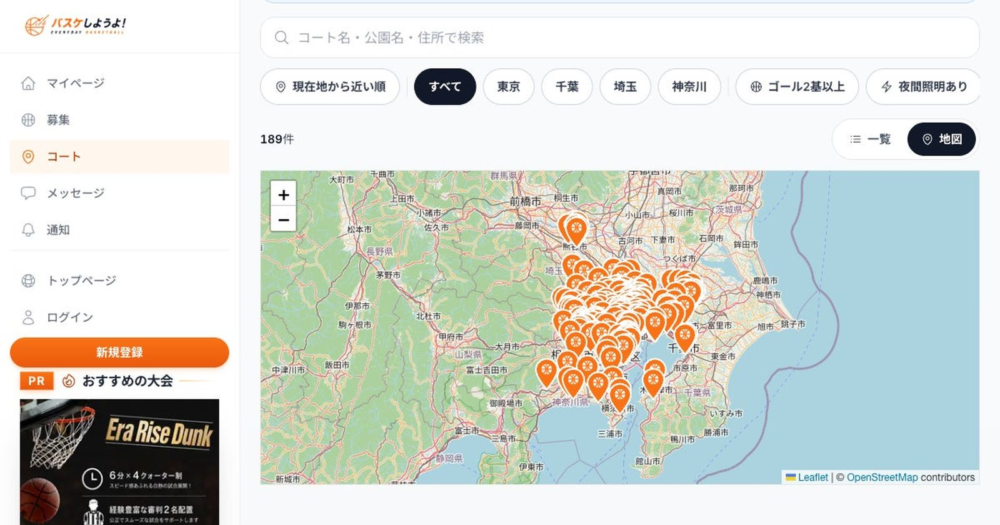

首都圏189件、 コートマップで一望 —— 「バスケしようよ！」が新機能公開
草バスケコミュニティサービス「バスケしようよ！」を運営する株式会社Walkers（東京都、代表取締役：渡辺敦司）は8月31日、首都圏のストリートバスケットボールコート189件を地図から探せる新機能「コートマップ」を公開したと発表した。会員登録・ログインは不要で、誰でも無料で利用できる。

「どこで遊べるか分からない」を解消
「バスケしようよ！」はこれまで、近所のピックアップゲーム（草バスケ）を探す・主催するためのコミュニティサービスを提供してきた。ストリートバスケのコート情報は自治体や公園の案内ページなどに散在しており、リングの有無やフルコート・ハーフコートの別といったプレイヤーが本当に知りたい粒度の情報を見つけるのは容易ではなかったという。今回のコートマップは、その一歩手前にある「そもそもプレイできる場所を見つける」という課題に応えるものだと同社は説明している。
東京110件・千葉29件・埼玉28件・神奈川22件
掲載されているのは東京110件、千葉29件、埼玉28件、神奈川22件の計189件。地図とカード一覧の両方から探せるほか、現在地から近い順での並び替え、市区町村での絞り込み、キーワード検索にも対応する。コートごとに「フルコート／ハーフコート／リングのみ」の種別、利用料金の有無（189件中185件が無料で利用できるコート）、夜間照明の有無なども掲載しており、プレイヤー目線の情報整理を図ったという。掲載情報は変更される場合があるため、最新の利用可否は現地の掲示や公式サイトの確認が必要としている。
登録不要、今日から使える
コートマップの閲覧に会員登録は不要で、誰でも無料で利用できる。同社は掲載エリア・件数の拡大と情報の更新を継続的に行っていくとしている。代表取締役の渡辺敦司氏は「コートの場所さえわかれば、バスケは今日から始められます。『探す手間』をこのマップで消しました。まずは近所のコートを1つ、見つけてみてください」とコメントしている。
出典: 株式会社Walkersプレスリリース「草バスケコミュニティ「バスケしようよ！」、首都圏のストリートバスケコート189件を地図から探せる「コートマップ」を公開」（PR TIMES・2026年8月31日）
https://prtimes.jp/main/html/rd/p/000000050.000089712.html